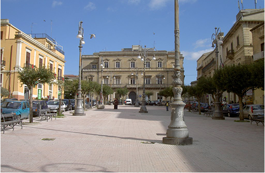
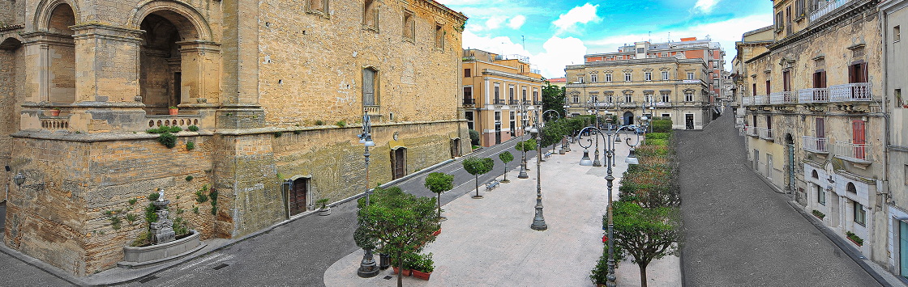
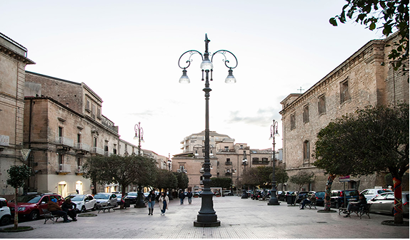
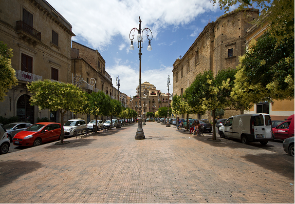

Dove la città prende vita
Piazza Vittorio Emanuele, situata nel centro storico di Enna, è la piazza principale della città e rappresenta il fulcro della vita cittadina. Grazie alla sua posizione offre una vista panoramica sulla città e sulla campagna circostante, rendendola un punto di riferimento sia per i cittadini che per i visitatori.
La piazza è circondata da edifici storici di grande rilievo, tra cui palazzi comunali e chiese antiche, che testimoniano il ricco passato culturale della città. L’architettura mescola elementi medievali e rinascimentali, creando un’atmosfera elegante tipica dei centri storici siciliani.

Centro di cultura e società
Oggi Piazza V. Emanuele non è solo una piazza ma anche un luogo di ritrovo vivo. Ristoranti e negozi animano gli spazi pedonali, mentre mercati e manifestazioni rendono la piazza un punto di riferimento.
La posizione della piazza permette di godere di panorami spettacolari su Enna. Passeggiando tra i portici, i visitatori possono ammirare non solo l’architettura urbana, ma anche la bellezza del paesaggio che circonda la città.

Architettura e manifestazioni
Piazza V. Emanuele ospita eventi culturali, mercati locali e manifestazioni. Dalle sagre gastronomiche alle feste, la piazza diventa un luogo di aggregazione per cittadini e turisti, offrendo un’esperienza autentica.
Passeggiando nella piazza, è possibile ammirare dettagli architettonici unici: portici eleganti, balconi decorati e facciate storiche che raccontano secoli di storia. Questi elementi rendono Piazza Vittorio Emanuele non solo un centro urbano, ma anche un piccolo museo a cielo aperto.
